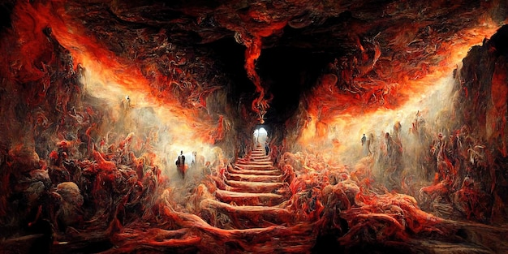
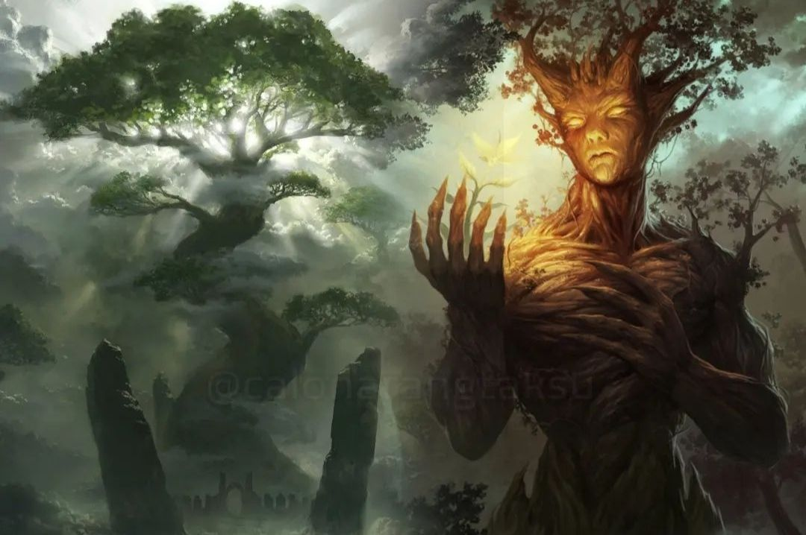

31 Alam Kehidupan
I. Kāmaloka (Alam Nafsu)




II. Rūpaloka (Alam Berbentuk)
Alam ini terdiri dari 16 alam yang dihuni oleh makhluk yang telah terbebas dari nafsu, tetapi masih memiliki bentuk fisik halus. Alam ini dicapai melalui meditasi rupa-jhāna.
|
|
||
| 01 | Brahma Parisajja | Alam para pelayan Brahma, yang merupakan tingkatan pertama dari dewa di alam bentuk. |
| 02 | Brahma Purohita | Alam para penasehat Brahma. Para dewa ini lebih tinggi daripada para pelayan Brahma. |
| 03 | Maha Brahma | Alam ini dihuni oleh dewa-dewa Brahma tingkat tinggi yang dianggap memiliki kekuatan besar dan hidup dalam kebahagiaan besar. |
| 04 | Parittabha | Para dewa di sini memiliki cahaya yang lemah namun tetap cerah. Mereka merupakan hasil dari meditasi yang lebih tinggi. |
| 05 | Appamanabha | Para dewa di alam ini memiliki cahaya yang tidak terbatas, yang memancar dari mereka karena pencapaian meditatif. |
| 06 | Abhassara | Alam dewa yang sangat terang dengan cahaya bersinar luar biasa. Mereka menikmati kebahagiaan batin dari meditasinya. |
| 07 | Parittasubha | Para dewa di alam ini memancarkan cahaya terang tapi lebih lemah dibanding alam di atasnya. |
| 08 | Appamanasubha | Cahaya di alam ini lebih kuat dan tanpa batas. Para dewa di sini memiliki kekuatan batin yang besar. |
| 09 | Subhakinha | Alam kebahagiaan mutlak dengan cahaya terang yang menyelimuti para dewa yang bermeditasi mendalam. |
| 10 | Vehapphala | Para dewa di alam ini hidup sangat lama dan penuh kebahagiaan, merupakan hasil dari pencapaian meditatif tingkat tinggi. |
| 11 | Asannasatta | Alam di mana makhluk hanya memiliki bentuk fisik tanpa kesadaran. Setelah masa waktu tertentu, kesadaran akan muncul dan mereka akan dilahirkan kembali. |
| 12 | Avihā | Dewa yang hidup dalam kebahagiaan yang tidak berakhir. Alam ini merupakan bagian dari alam rupa yang lebih tinggi. |
| 13 | Atappa | Para dewa di sini juga hidup dalam kebahagiaan yang lebih mendalam dibandingkan alam rupa lainnya. |
| 14 | Sudassa | Alam ini memiliki kebahagiaan yang sangat luar biasa, dan para dewa di sini tidak mengalami penderitaan sama sekali. |
| 15 | Sudassi | Para dewa di alam ini melihat alam-alam di bawah mereka dengan kebijaksanaan yang mendalam. |
| 16 | Akanittha | Ini adalah alam tertinggi di Rūpaloka, tempat para dewa yang telah mencapai puncak kebahagiaan dan pencapaian meditatif. |
III. Arūpaloka (Alam Tanpa Bentuk)
Alam ini terdiri dari 4 alam yang dihuni oleh makhluk yang telah terbebas dari bentuk fisik dan dicapai melalui arūpa-jhāna (meditasi tanpa bentuk).
| 01 | Ākāsānañcāyatana (Alam Ruang Tak Terbatas) | Makhluk di sini menyadari kekosongan ruang tak terbatas dan hidup dalam meditasi yang sangat dalam. |
| 02 | Viññāṇañcāyatana (Alam Kesadaran Tak Terbatas) | Alam ini dihuni oleh makhluk yang hidup dalam kesadaran tak terbatas, tanpa bentuk atau batas fisik. |
| 03 | Ākiñcaññāyatana (Alam Kekosongan Mutlak) | Alam di mana makhluk menyadari ketiadaan apa pun, hidup dalam keadaan kosong dan tanpa sesuatu yang konkret. |
| 04 | Nevasaññānāsaññāyatana (Alam Bukan Kesadaran maupun Bukan Kesadaran) | Alam tertinggi di Arūpaloka, di mana makhluk berada di antara kondisi sadar dan tidak sadar. Ini adalah bentuk meditasi yang sangat halus dan mendalam. |